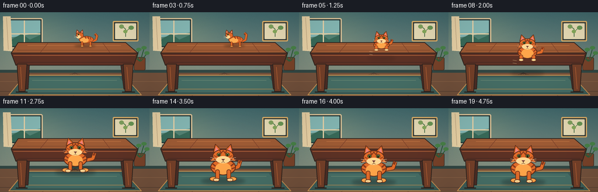
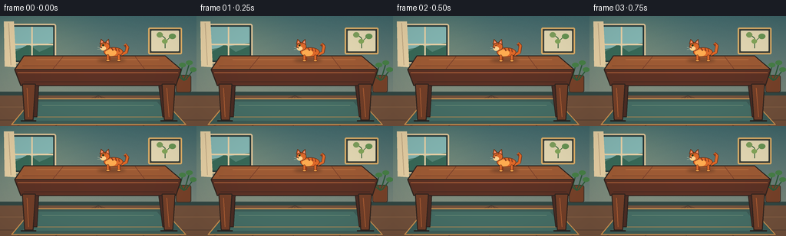

CODING AGENTS AS PIXEL WORLD MODELS
traex/GPT-5.6-Sol · dynamic_spatial_relationship_0012
点击播放 · 原生 RGB 像素
逐轮保存的候选
回放视频、检查图与代码变化。
每份候选均可单独播放。实际图片检查记录在下方工具轨迹中。
候选 01播放与检查图
点击播放 · 原生 RGB 像素


展开代码变化
--- 上一保存版本
+++ 本次保存版本
@@ -0,0 +1,324 @@
+from pathlib import Path
+import math
+import numpy as np
+from PIL import Image, ImageDraw, ImageFilter
+import artifact_io
+
+W, H, N = 256, 144, 20
+SS = 4
+rng = np.random.default_rng(1209)
+
+# Drawing helpers in logical 256x144 coordinates.
+def pts(seq):
+ return [(round(x*SS), round(y*SS)) for x, y in seq]
+
+def box(b):
+ return tuple(round(v*SS) for v in b)
+
+def poly(d, p, fill, outline=None, width=1):
+ d.polygon(pts(p), fill=fill)
+ if outline:
+ d.line(pts(list(p)+[p[0]]), fill=outline, width=max(1, round(width*SS)), joint='curve')
+
+def ellipse(d, b, fill, outline=None, width=1):
+ d.ellipse(box(b), fill=fill, outline=outline, width=max(1, round(width*SS)))
+
+def rr(d, b, r, fill, outline=None, width=1):
+ d.rounded_rectangle(box(b), radius=round(r*SS), fill=fill, outline=outline,
+ width=max(1, round(width*SS)))
+
+def line(d, p, fill, width=1, joint='curve'):
+ d.line(pts(p), fill=fill, width=max(1, round(width*SS)), joint=joint)
+
+def cat_shadow(layer, cx, cy, scale, alpha, on_table=False):
+ sh = Image.new('RGBA', layer.size, (0,0,0,0)); sd = ImageDraw.Draw(sh)
+ w = (25 if on_table else 31) * scale
+ h = (3.2 if on_table else 4.8) * scale
+ ellipse(sd, (cx-w, cy-h, cx+w, cy+h), (25, 22, 24, alpha))
+ sh = sh.filter(ImageFilter.GaussianBlur(round((2.0 if on_table else 2.7)*SS)))
+ layer.alpha_composite(sh)
+
+# Side-view tabby for the opening, standing securely on the tabletop.
+def draw_cat_side(layer, cx, ground, s, frame):
+ d = ImageDraw.Draw(layer)
+ bob = math.sin(frame*0.8)*0.45
+ y = ground + bob
+ outline = (101, 48, 25, 255)
+ orange = (218, 105, 42, 255)
+ light = (250, 173, 83, 255)
+ dark = (137, 60, 29, 255)
+ cream = (255, 213, 148, 255)
+ # Tail: thick curved upward tail, behind the body.
+ wag = math.sin(frame*0.65)*3.0
+ tail = [(cx+14*s,y-11*s),(cx+23*s,y-15*s),(cx+25*s,y-(24+wag)*s),(cx+20*s,y-(29+wag)*s)]
+ line(d, tail, outline, 6.0*s)
+ line(d, tail, orange, 4.2*s)
+ line(d, [(cx+20.7*s,y-(28+wag)*s),(cx+22*s,y-(24+wag)*s)], dark, 2.5*s)
+ # Far legs.
+ phase = math.sin(frame*1.2)
+ rr(d, (cx-10*s,y-10*s,cx-5.5*s,y+0.7*s), 2*s, dark)
+ rr(d, (cx+8*s,y-10*s,cx+12.5*s,y+0.7*s), 2*s, dark)
+ # Body and chest.
+ ellipse(d, (cx-18*s,y-24*s,cx+17*s,y-7*s), orange, outline, 1.2*s)
+ ellipse(d, (cx-15*s,y-20*s,cx+5*s,y-8*s), light)
+ # Near legs with little paws.
+ rr(d, (cx-13*s,y-11*s,cx-8.5*s,y+1*s), 2*s, orange, outline, .8*s)
+ ellipse(d, (cx-14*s,y-1.6*s,cx-7*s,y+1.8*s), light, outline, .7*s)
+ rr(d, (cx+7*s,y-11*s,cx+11.5*s,y+1*s), 2*s, orange, outline, .8*s)
+ ellipse(d, (cx+6*s,y-1.6*s,cx+13*s,y+1.8*s), light, outline, .7*s)
+ # Shoulder stripe and back stripes.
+ line(d, [(cx-4*s,y-23*s),(cx-1*s,y-18*s)], dark, 2.1*s)
+ line(d, [(cx+3*s,y-22.5*s),(cx+5*s,y-17.5*s)], dark, 2.0*s)
+ line(d, [(cx+9*s,y-21*s),(cx+10*s,y-16*s)], dark, 1.8*s)
+ # Head facing left.
+ hx, hy = cx-16*s, y-25*s
+ poly(d, [(hx-9*s,hy-5*s),(hx-7*s,hy-14*s),(hx-1*s,hy-8*s)], orange, outline, .9*s)
+ poly(d, [(hx+1*s,hy-8*s),(hx+7*s,hy-14*s),(hx+8*s,hy-4*s)], orange, outline, .9*s)
+ poly(d, [(hx-6.5*s,hy-7*s),(hx-6*s,hy-11*s),(hx-3*s,hy-8*s)], (244,151,129,255))
+ poly(d, [(hx+3*s,hy-8*s),(hx+6*s,hy-11*s),(hx+6.5*s,hy-6*s)], (244,151,129,255))
+ ellipse(d, (hx-9*s,hy-8*s,hx+9*s,hy+7*s), orange, outline, 1.0*s)
+ # Muzzle, eyes, nose.
+ ellipse(d, (hx-8*s,hy-1*s,hx+2*s,hy+7*s), cream)
+ blink = frame == 2
+ if blink:
+ line(d, [(hx-5*s,hy-3*s),(hx-1.5*s,hy-3.4*s)], (50,37,28,255), .9*s)
+ else:
+ ellipse(d, (hx-5*s,hy-4.5*s,hx-1.5*s,hy-1*s), (72,91,39,255))
+ ellipse(d, (hx-3.8*s,hy-4.2*s,hx-2.6*s,hy-.8*s), (23,20,16,255))
+ poly(d, [(hx-8*s,hy+1*s),(hx-5*s,hy+.2*s),(hx-5.6*s,hy+3*s)], (83,42,37,255))
+ # Face/back markings and whiskers.
+ line(d, [(hx-2*s,hy-7*s),(hx-1*s,hy-4.5*s)], dark, 1.2*s)
+ line(d, [(hx+1*s,hy-7*s),(hx+1*s,hy-4.5*s)], dark, 1.2*s)
+ line(d, [(hx-7*s,hy+3*s),(hx-13*s,hy+1*s)], (255,235,200,220), .55*s)
+ line(d, [(hx-7*s,hy+4.3*s),(hx-13*s,hy+5*s)], (255,235,200,220), .55*s)
+
+# Front/three-quarter view for crouching, leaping, running and stopping.
+def draw_cat_front(layer, cx, ground, s, frame, airborne=False, crouch=0.0, run=0.0):
+ d = ImageDraw.Draw(layer)
+ outline=(91,43,25,255); orange=(220,108,43,255); light=(249,166,76,255)
+ dark=(132,57,28,255); cream=(255,216,151,255); pink=(235,129,124,255)
+ # Animation offsets. In air, legs tuck; while running, alternate paws.
+ stride = math.sin(run*math.pi*2) if run else 0.0
+ body_bob = (abs(math.sin(run*math.pi*2))*1.1 if run else 0) * s
+ y = ground - body_bob
+ # Tail swishes behind the body.
+ tail_side = math.sin(frame*.82)*4*s
+ tailpath=[(cx+12*s,y-16*s),(cx+25*s+tail_side,y-19*s),(cx+28*s+tail_side,y-28*s)]
+ line(d, tailpath, outline, 6*s)
+ line(d, tailpath, orange, 4.2*s)
+ line(d, [(cx+26*s+tail_side,y-24*s),(cx+28*s+tail_side,y-28*s)], dark, 2.6*s)
+ # Rear/body, slightly compressed when crouching.
+ bh = (24-6*crouch)*s
+ ellipse(d, (cx-18*s,y-30*s+6*crouch*s,cx+18*s,y-7*s), orange, outline, 1.25*s)
+ ellipse(d, (cx-11*s,y-25*s+5*crouch*s,cx+11*s,y-8*s), light)
+ # Side stripes on torso.
+ line(d, [(cx-16*s,y-24*s),(cx-11*s,y-20*s)], dark, 2.0*s)
+ line(d, [(cx+16*s,y-24*s),(cx+11*s,y-20*s)], dark, 2.0*s)
+ line(d, [(cx-17*s,y-18*s),(cx-12*s,y-16*s)], dark, 1.7*s)
+ line(d, [(cx+17*s,y-18*s),(cx+12*s,y-16*s)], dark, 1.7*s)
+ # Legs and paws. Tuck during leap, alternate extension while running.
+ if airborne:
+ # dangling/tucked paws make the leap unmistakable
+ rr(d,(cx-15*s,y-14*s,cx-8*s,y-5*s),3*s,orange,outline,.8*s)
+ rr(d,(cx+8*s,y-14*s,cx+15*s,y-5*s),3*s,orange,outline,.8*s)
+ ellipse(d,(cx-16*s,y-7*s,cx-7*s,y-2*s),cream,outline,.7*s)
+ ellipse(d,(cx+7*s,y-7*s,cx+16*s,y-2*s),cream,outline,.7*s)
+ else:
+ left_ext=(3.2*stride)*s; right_ext=(-3.2*stride)*s
+ # rear feet behind front paws
+ ellipse(d,(cx-18*s-left_ext,y-5*s,cx-7*s-left_ext,y+1.5*s),light,outline,.8*s)
+ ellipse(d,(cx+7*s-right_ext,y-5*s,cx+18*s-right_ext,y+1.5*s),light,outline,.8*s)
+ rr(d,(cx-11*s,y-15*s,cx-5*s,y-1*s+left_ext*.25),2.6*s,orange,outline,.8*s)
+ rr(d,(cx+5*s,y-15*s,cx+11*s,y-1*s+right_ext*.25),2.6*s,orange,outline,.8*s)
+ ellipse(d,(cx-13*s-left_ext,y-3*s,cx-4*s-left_ext,y+2*s),cream,outline,.75*s)
+ ellipse(d,(cx+4*s-right_ext,y-3*s,cx+13*s-right_ext,y+2*s),cream,outline,.75*s)
+ # toe marks
+ line(d,[(cx-9*s-left_ext,y-.5*s),(cx-8.5*s-left_ext,y+1*s)],(181,104,73,255),.45*s)
+ line(d,[(cx+9*s-right_ext,y-.5*s),(cx+8.5*s-right_ext,y+1*s)],(181,104,73,255),.45*s)
+ # Head and ears (large, readable face toward viewer).
+ hy=y-(34-5*crouch)*s
+ poly(d,[(cx-14*s,hy-5*s),(cx-11*s,hy-17*s),(cx-3*s,hy-9*s)],orange,outline,1*s)
+ poly(d,[(cx+3*s,hy-9*s),(cx+11*s,hy-17*s),(cx+14*s,hy-5*s)],orange,outline,1*s)
+ poly(d,[(cx-11.5*s,hy-7*s),(cx-10.2*s,hy-13.5*s),(cx-5.5*s,hy-8*s)],pink)
+ poly(d,[(cx+5.5*s,hy-8*s),(cx+10.2*s,hy-13.5*s),(cx+11.5*s,hy-7*s)],pink)
+ ellipse(d,(cx-15*s,hy-10*s,cx+15*s,hy+10*s),orange,outline,1.1*s)
+ # cheek ruffs
+ poly(d,[(cx-14*s,hy+1*s),(cx-18*s,hy+7*s),(cx-11*s,hy+6*s)],orange,outline,.6*s)
+ poly(d,[(cx+14*s,hy+1*s),(cx+18*s,hy+7*s),(cx+11*s,hy+6*s)],orange,outline,.6*s)
+ ellipse(d,(cx-10*s,hy+0*s,cx+10*s,hy+10*s),cream)
+ # forehead tabby M and cheek marks
+ line(d,[(cx-5*s,hy-9*s),(cx-3*s,hy-4*s),(cx,hy-8*s),(cx+3*s,hy-4*s),(cx+5*s,hy-9*s)],dark,1.5*s)
+ line(d,[(cx-13*s,hy-1*s),(cx-9*s,hy+1*s)],dark,1.1*s)
+ line(d,[(cx+13*s,hy-1*s),(cx+9*s,hy+1*s)],dark,1.1*s)
+ # Eyes, with highlights.
+ eye_y=hy-1.8*s
+ ellipse(d,(cx-9*s,eye_y-3*s,cx-3*s,eye_y+2.2*s),(88,116,50,255),outline,.65*s)
+ ellipse(d,(cx+3*s,eye_y-3*s,cx+9*s,eye_y+2.2*s),(88,116,50,255),outline,.65*s)
+ ellipse(d,(cx-6.7*s,eye_y-2.7*s,cx-5.2*s,eye_y+2*s),(28,24,18,255))
+ ellipse(d,(cx+5.2*s,eye_y-2.7*s,cx+6.7*s,eye_y+2*s),(28,24,18,255))
+ ellipse(d,(cx-6.4*s,eye_y-2.2*s,cx-5.7*s,eye_y-1.5*s),(255,255,235,255))
+ ellipse(d,(cx+5.7*s,eye_y-2.2*s,cx+6.4*s,eye_y-1.5*s),(255,255,235,255))
+ # Nose, mouth and whiskers.
+ poly(d,[(cx-2.4*s,hy+4*s),(cx+2.4*s,hy+4*s),(cx,hy+6.5*s)],(112,56,53,255))
+ line(d,[(cx,hy+6*s),(cx,hy+8*s)],outline,.65*s)
+ line(d,[(cx,hy+8*s),(cx-2.5*s,hy+9*s)],outline,.55*s)
+ line(d,[(cx,hy+8*s),(cx+2.5*s,hy+9*s)],outline,.55*s)
+ for off in (-1,2):
+ line(d,[(cx-6*s,hy+(5+off)*s),(cx-18*s,hy+(3+off)*s)],(255,240,209,225),.55*s)
+ line(d,[(cx+6*s,hy+(5+off)*s),(cx+18*s,hy+(3+off)*s)],(255,240,209,225),.55*s)
+
+
+def background(frame):
+ # Warm, softly textured morning light; fixed camera throughout.
+ yy, xx = np.mgrid[0:H*SS, 0:W*SS]
+ wall_top=np.array([64,105,111.],dtype=float); wall_bottom=np.array([120,137,129.],dtype=float)
+ t=np.clip(yy/(101*SS),0,1)[...,None]
+ arr=wall_top*(1-t)+wall_bottom*t
+ # golden window illumination from the left
+ glow=np.exp(-(((xx-47*SS)/(72*SS))**2+((yy-40*SS)/(59*SS))**2))[...,None]
+ arr += glow*np.array([24,19,7.])
+ # low-amplitude fixed film grain
+ noise=rng.normal(0,1.25,(H*SS,W*SS,1))
+ arr=np.clip(arr+noise,0,255).astype(np.uint8)
+ return Image.fromarray(arr,'RGB').convert('RGBA')
+
+
+def draw_room(im, frame):
+ d=ImageDraw.Draw(im)
+ # back wall molding and floor
+ rr(d,(0,99,256,104),0,(49,72,70,255))
+ poly(d,[(0,104),(256,104),(256,144),(0,144)],(113,82,62,255))
+ # floorboards and perspective seams
+ line(d,[(0,119),(256,119)],(136,99,72,150),.7)
+ line(d,[(0,136),(256,136)],(79,59,49,120),.8)
+ for x in [22,72,126,188,236]:
+ line(d,[(128,104),(x,144)],(82,61,51,90),.65)
+ # Window on left: frame, glass, distant scene, curtain.
+ rr(d,(10,10,73,62),3,(42,62,63,255),(220,199,158,255),2)
+ rr(d,(14,14,69,58),1,(130,184,185,255))
+ # subtle sky gradient bands
+ poly(d,[(14,44),(69,35),(69,58),(14,58)],(82,131,119,255))
+ poly(d,[(14,50),(37,37),(51,47),(69,39),(69,58),(14,58)],(55,106,91,255))
+ line(d,[(41.5,14),(41.5,58)],(228,211,172,255),2)
+ line(d,[(14,37),(69,37)],(228,211,172,255),2)
+ # light curtain
+ poly(d,[(5,7),(18,7),(21,67),(6,66)],(227,210,170,210))
+ line(d,[(11,9),(14,64)],(191,171,137,180),1)
+ # Framed cat-like botanical picture on right wall
+ rr(d,(193,15,237,50),2,(56,63,59,255),(218,176,107,255),2)
+ rr(d,(197,19,233,46),1,(224,218,185,255))
+ line(d,[(215,42),(215,29),(208,23)],(70,112,73,255),1.3)
+ line(d,[(215,34),(223,26)],(70,112,73,255),1.1)
+ ellipse(d,(204,21,212,28),(124,160,96,255))
+ ellipse(d,(220,23,229,30),(102,150,86,255))
+ ellipse(d,(211,30,218,36),(129,168,92,255))
+ # Plant at right rear
+ rr(d,(229,77,249,100),3,(118,67,43,255),(60,50,42,255),1)
+ for end,ctrl in [((238,64),(235,76)),((247,61),(242,78)),((228,66),(234,80)),((252,70),(242,83))]:
+ line(d,[(239,84),ctrl,end],(45,91,60,255),1.5)
+ ellipse(d,(end[0]-5,end[1]-3,end[0]+4,end[1]+3),(70,129,73,255))
+ # Rug, partly under table, with warm border.
+ poly(d,[(43,108),(211,108),(242,142),(15,142)],(60,93,90,255),(199,146,83,255),1.5)
+ poly(d,[(50,112),(204,112),(226,137),(29,137)],(69,111,105,255))
+ line(d,[(55,117),(200,117)],(106,140,121,160),.8)
+ line(d,[(38,132),(217,132)],(199,146,83,180),.8)
+
+
+def draw_table(im):
+ d=ImageDraw.Draw(im)
+ edge=(46,36,32,255); wood=(113,64,42,255); woodlight=(154,91,54,255); front=(91,50,38,255)
+ # rear legs first
+ poly(d,[(38,77),(51,77),(48,132),(39,132)],(73,45,38,255),edge,1)
+ poly(d,[(205,77),(218,77),(221,132),(212,132)],(73,45,38,255),edge,1)
+ # feet highlights
+ line(d,[(41,84),(43,127)],(120,73,49,180),1.1)
+ line(d,[(210,84),(216,127)],(120,73,49,180),1.1)
+ # tabletop top plane, strong perspective cue for "on"
+ poly(d,[(31,52),(215,52),(236,70),(19,70)],woodlight,edge,1.2)
+ # top grain
+ line(d,[(47,57),(207,57)],(190,119,69,150),.7)
+ line(d,[(29,65),(224,65)],(103,56,39,130),.6)
+ line(d,[(82,53),(69,69)],(121,66,44,140),.7)
+ line(d,[(176,53),(188,69)],(121,66,44,120),.7)
+ # front apron and lip
+ poly(d,[(19,70),(236,70),(229,91),(27,91)],front,edge,1.3)
+ line(d,[(23,74),(232,74)],(181,103,62,220),1.1)
+ line(d,[(31,86),(226,86)],(62,39,35,150),.8)
+ # front legs
+ poly(d,[(29,89),(46,89),(43,136),(32,136)],wood,edge,1.2)
+ poly(d,[(211,89),(228,89),(225,136),(214,136)],wood,edge,1.2)
+ line(d,[(35,94),(37,132)],(169,94,53,190),1.1)
+ line(d,[(217,94),(220,132)],(169,94,53,190),1.1)
+ # tiny floor contact shadows
+ line(d,[(27,137),(47,137)],(42,38,35,150),2)
+ line(d,[(209,137),(231,137)],(42,38,35,150),2)
+
+
+def smooth(a,b,t):
+ t=max(0,min(1,t)); t=t*t*(3-2*t); return a+(b-a)*t
+
+frames=[]
+for f in range(N):
+ im=background(f)
+ draw_room(im,f)
+ draw_table(im)
+
+ cat_layer=Image.new('RGBA',im.size,(0,0,0,0))
+ # Opening hold: tabby is unambiguously standing ON the tabletop.
+ if f <= 3:
+ cat_shadow(cat_layer,145,58,0.72,80,True)
+ draw_cat_side(cat_layer,148,58,0.72,f)
+ elif f == 4:
+ # It turns toward the viewer and crouches at the table's front edge.
+ cat_shadow(cat_layer,142,65,0.72,75,True)
+ draw_cat_front(cat_layer,142,65,0.72,f,False,0.70,0)
+ else:
+ # Travel down-screen: leap off, land, then run a few steps toward camera.
+ path={
+ 5:(141,68,.76,True,.95,0.0),
+ 6:(139,73,.81,True,.65,0.0),
+ 7:(137,79,.87,True,.25,0.0),
+ 8:(135,86,.93,True,0.0,0.0),
+ 9:(133,94,1.00,True,0.0,0.0),
+ 10:(131,102,1.07,False,.15,.12),
+ 11:(129,109,1.12,False,0,.35),
+ 12:(127,115,1.16,False,0,.58),
+ 13:(126,120,1.19,False,0,.82),
+ 14:(126,124,1.21,False,0,1.06),
+ 15:(127,126,1.22,False,.05,1.30),
+ 16:(128,126,1.22,False,.10,1.52),
+ 17:(128,126,1.22,False,.05,1.76),
+ 18:(128,126,1.22,False,0,0),
+ 19:(128,126,1.22,False,0,0),
+ }
+ cx,gy,sc,air,cr,run=path[f]
+ # airborne shadow stays below on the floor and converges at landing.
+ if f <= 9:
+ shadow_y=smooth(79,110,(f-5)/4)
+ shadow_alpha=int(smooth(35,75,(f-5)/4))
+ cat_shadow(cat_layer,cx,shadow_y,sc,shadow_alpha,False)
+ # curved little motion accents behind the leap
+ md=ImageDraw.Draw(cat_layer)
+ for k in range(2):
+ y0=67+(f-5)*5+k*5
+ line(md,[(cx-27*sc,y0),(cx-20*sc,y0+1)],(240,214,162,110),.9)
+ else:
+ cat_shadow(cat_layer,cx,gy+1,sc,80,False)
+ draw_cat_front(cat_layer,cx,gy,sc,f,air,cr,run)
+ im.alpha_composite(cat_layer)
+
+ # Soft vignette and warm grade unify the vector layers.
+ arr=np.asarray(im.convert('RGB')).astype(np.float32)
+ y,x=np.mgrid[0:H*SS,0:W*SS]
+ r=((x-W*SS/2)/(W*SS*.72))**2+((y-H*SS/2)/(H*SS*.78))**2
+ vig=np.clip(1-0.12*r,0.82,1.0)[...,None]
+ arr*=vig
+ arr[...,0]*=1.025; arr[...,2]*=.975
+ im=Image.fromarray(np.clip(arr,0,255).astype(np.uint8),'RGB')
+ im=im.resize((W,H),Image.Resampling.LANCZOS)
+ frames.append(np.asarray(im,dtype=np.uint8))
+
+frames=np.stack(frames,axis=0)
+assert frames.shape==(20,144,256,3) and frames.dtype==np.uint8
+artifact_io.save(frames,Path(__file__).resolve().parent)
+print('saved',frames.shape,frames.dtype,'range',int(frames.min()),int(frames.max()))
可观测工具轨迹
实际执行的命令与返回图片。
命令 1exit 0
/bin/bash -lc "cat prompt.txt && printf '\\n--- GENERATION_RULES ---\\n' && cat GENERATION_RULES.md && printf '\\n--- TASK_SPEC ---\\n' && cat task_spec.json"
命令 2exit 0
/bin/bash -lc "find . -maxdepth 2 -type f -printf '%p\\n' | sort && printf '\\n--- tools ---\\n' && (command -v ffmpeg || true) && (command -v python3 || true)"
命令 3exit 0
/bin/bash -lc 'cat artifact_io.py'
命令 4exit 0
/bin/bash -lc "python3 - <<'PY' mods=['numpy','PIL','cv2','imageio','imageio_ffmpeg'] for m in mods: try: x=__import__(m); print(m, 'OK', getattr(x,'__version__','')) except Exception as e: print(m,'NO',e) PY"
命令 5exit 0
/bin/bash -lc "cat > generate.py <<'PY'
from pathlib import Path
import math
import numpy as np
from PIL import Image, ImageDraw, ImageFilter
import artifact_io
W, H, N = 256, 144, 20
SS = 4
rng = np.random.default_rng(1209)
# Drawing helpers in logical 256x144 coordinates.
def pts(seq):
return [(round(x*SS), round(y*SS)) for x, y in seq]
def box(b):
return tuple(round(v*SS) for v in b)
def poly(d, p, fill, outline=None, width=1):
d.polygon(pts(p), fill=fill)
if outline:
d.line(pts(list(p)+[p[0]]), fill=outline, width=max(1, round(width*SS)), joint='curve')
def ellipse(d, b, fill, outline=None, width=1):
d.ellipse(box(b), fill=fill, outline=outline, width=max(1, round(width*SS)))
def rr(d, b, r, fill, outline=None, width=1):
d.rounded_rectangle(box(b), radius=round(r*SS), fill=fill, outline=outline,
width=max(1, round(width*SS)))
def line(d, p, fill, width=1, joint='curve'):
d.line(pts(p), fill=fill, width=max(1, round(width*SS)), joint=joint)
def cat_shadow(layer, cx, cy, scale, alpha, on_table=False):
sh = Image.new('RGBA', layer.size, (0,0,0,0)); sd = ImageDraw.Draw(sh)
w = (25 if on_table else 31) * scale
h = (3.2 if on_table else 4.8) * scale
ellipse(sd, (cx-w, cy-h, cx+w, cy+h), (25, 22, 24, alpha))
sh = sh.filter(ImageFilter.GaussianBlur(round((2.0 if on_table else 2.7)*SS)))
layer.alpha_composite(sh)
# Side-view tabby for the opening, standing securely on the tabletop.
def draw_cat_side(layer, cx, ground, s, frame):
d = ImageDraw.Draw(layer)
bob = math.sin(frame*0.8)*0.45
y = ground + bob
outline = (101, 48, 25, 255)
orange = (218, 105, 42, 255)
light = (250, 173, 83, 255)
dark = (137, 60, 29, 255)
cream = (255, 213, 148, 255)
# Tail: thick curved upward tail, behind the body.
wag = math.sin(frame*0.65)*3.0
tail = [(cx+14*s,y-11*s),(cx+23*s,y-15*s),(cx+25*s,y-(24+wag)*s),(cx+20*s,y-(29+wag)*s)]
line(d, tail, outline, 6.0*s)
line(d, tail, orange, 4.2*s)
line(d, [(cx+20.7*s,y-(28+wag)*s),(cx+22*s,y-(24+wag)*s)], dark, 2.5*s)
# Far legs.
phase = math.sin(frame*1.2)
rr(d, (cx-10*s,y-10*s,cx-5.5*s,y+0.7*s), 2*s, dark)
rr(d, (cx+8*s,y-10*s,cx+12.5*s,y+0.7*s), 2*s, dark)
# Body and chest.
ellipse(d, (cx-18*s,y-24*s,cx+17*s,y-7*s), orange, outline, 1.2*s)
ellipse(d, (cx-15*s,y-20*s,cx+5*s,y-8*s), light)
# Near legs with little paws.
rr(d, (cx-13*s,y-11*s,cx-8.5*s,y+1*s), 2*s, orange, outline, .8*s)
ellipse(d, (cx-14*s,y-1.6*s,cx-7*s,y+1.8*s), light, outline, .7*s)
rr(d, (cx+7*s,y-11*s,cx+11.5*s,y+1*s), 2*s, orange, outline, .8*s)
ellipse(d, (cx+6*s,y-1.6*s,cx+13*s,y+1.8*s), light, outline, .7*s)
# Shoulder stripe and back stripes.
line(d, [(cx-4*s,y-23*s),(cx-1*s,y-18*s)], dark, 2.1*s)
line(d, [(cx+3*s,y-22.5*s),(cx+5*s,y-17.5*s)], dark, 2.0*s)
line(d, [(cx+9*s,y-21*s),(cx+10*s,y-16*s)], dark, 1.8*s)
# Head facing left.
hx, hy = cx-16*s, y-25*s
poly(d, [(hx-9*s,hy-5*s),(hx-7*s,hy-14*s),(hx-1*s,hy-8*s)], orange, outline, .9*s)
poly(d, [(hx+1*s,hy-8*s),(hx+7*s,hy-14*s),(hx+8*s,hy-4*s)], orange, outline, .9*s)
poly(d, [(hx-6.5*s,hy-7*s),(hx-6*s,hy-11*s),(hx-3*s,hy-8*s)], (244,151,129,255))
poly(d, [(hx+3*s,hy-8*s),(hx+6*s,hy-11*s),(hx+6.5*s,hy-6*s)], (244,151,129,255))
ellipse(d, (hx-9*s,hy-8*s,hx+9*s,hy+7*s), orange, outline, 1.0*s)
# Muzzle, eyes, nose.
ellipse(d, (hx-8*s,hy-1*s,hx+2*s,hy+7*s), cream)
blink = frame == 2
if blink:
line(d, [(hx-5*s,hy-3*s),(hx-1.5*s,hy-3.4*s)], (50,37,28,255), .9*s)
else:
ellipse(d, (hx-5*s,hy-4.5*s,hx-1.5*s,hy-1*s), (72,91,39,255))
ellipse(d, (hx-3.8*s,hy-4.2*s,hx-2.6*s,hy-.8*s), (23,20,16,255))
poly(d, [(hx-8*s,hy+1*s),(hx-5*s,hy+.2*s),(hx-5.6*s,hy+3*s)], (83,42,37,255))
# Face/back markings and whiskers.
line(d, [(hx-2*s,hy-7*s),(hx-1*s,hy-4.5*s)], dark, 1.2*s)
line(d, [(hx+1*s,hy-7*s),(hx+1*s,hy-4.5*s)], dark, 1.2*s)
line(d, [(hx-7*s,hy+3*s),(hx-13*s,hy+1*s)], (255,235,200,220), .55*s)
line(d, [(hx-7*s,hy+4.3*s),(hx-13*s,hy+5*s)], (255,235,200,220), .55*s)
# Front/three-quarter view for crouching, leaping, running and stopping.
def draw_cat_front(layer, cx, ground, s, frame, airborne=False, crouch=0.0, run=0.0):
d = ImageDraw.Draw(layer)
outline=(91,43,25,255); orange=(220,108,43,255); light=(249,166,76,255)
dark=(132,57,28,255); cream=(255,216,151,255); pink=(235,129,124,255)
# Animation offsets. In air, legs tuck; while running, alternate paws.
stride = math.sin(run*math.pi*2) if run else 0.0
body_bob = (abs(math.sin(run*math.pi*2))*1.1 if run else 0) * s
y = ground - body_bob
# Tail swishes behind the body.
tail_side = math.sin(frame*.82)*4*s
tailpath=[(cx+12*s,y-16*s),(cx+25*s+tail_side,y-19*s),(cx+28*s+tail_side,y-28*s)]
line(d, tailpath, outline, 6*s)
line(d, tailpath, orange, 4.2*s)
line(d, [(cx+26*s+tail_side,y-24*s),(cx+28*s+tail_side,y-28*s)], dark, 2.6*s)
# Rear/body, slightly compressed when crouching.
bh = (24-6*crouch)*s
ellipse(d, (cx-18*s,y-30*s+6*crouch*s,cx+18*s,y-7*s), orange, outline, 1.25*s)
ellipse(d, (cx-11*s,y-25*s+5*crouch*s,cx+11*s,y-8*s), light)
# Side stripes on torso.
line(d, [(cx-16*s,y-24*s),(cx-11*s,y-20*s)], dark, 2.0*s)
line(d, [(cx+16*s,y-24*s),(cx+11*s,y-20*s)], dark, 2.0*s)
line(d, [(cx-17*s,y-18*s),(cx-12*s,y-16*s)], dark, 1.7*s)
line(d, [(cx+17*s,y-18*s),(cx+12*s,y-16*s)], dark, 1.7*s)
# Legs and paws. Tuck during leap, alternate extension while running.
if airborne:
# dangling/tucked paws make the leap unmistakable
rr(d,(cx-15*s,y-14*s,cx-8*s,y-5*s),3*s,orange,outline,.8*s)
rr(d,(cx+8*s,y-14*s,cx+15*s,y-5*s),3*s,orange,outline,.8*s)
ellipse(d,(cx-16*s,y-7*s,cx-7*s,y-2*s),cream,outline,.7*s)
ellipse(d,(cx+7*s,y-7*s,cx+16*s,y-2*s),cream,outline,.7*s)
else:
left_ext=(3.2*stride)*s; right_ext=(-3.2*stride)*s
# rear feet behind front paws
ellipse(d,(cx-18*s-left_ext,y-5*s,cx-7*s-left_ext,y+1.5*s),light,outline,.8*s)
ellipse(d,(cx+7*s-right_ext,y-5*s,cx+18*s-right_ext,y+1.5*s),light,outline,.8*s)
rr(d,(cx-11*s,y-15*s,cx-5*s,y-1*s+left_ext*.25),2.6*s,orange,outline,.8*s)
rr(d,(cx+5*s,y-15*s,cx+11*s,y-1*s+right_ext*.25),2.6*s,orange,outline,.8*s)
ellipse(d,(cx-13*s-left_ext,y-3*s,cx-4*s-left_ext,y+2*s),cream,outline,.75*s)
ellipse(d,(cx+4*s-right_ext,y-3*s,cx+13*s-right_ext,y+2*s),cream,outline,.75*s)
# toe marks
line(d,[(cx-9*s-left_ext,y-.5*s),(cx-8.5*s-left_ext,y+1*s)],(181,104,73,255),.45*s)
line(d,[(cx+9*s-right_ext,y-.5*s),(cx+8.5*s-right_ext,y+1*s)],(181,104,73,255),.45*s)
# Head and ears (large, readable face toward viewer).
hy=y-(34-5*crouch)*s
poly(d,[(cx-14*s,hy-5*s),(cx-11*s,hy-17*s),(cx-3*s,hy-9*s)],orange,outline,1*s)
poly(d,[(cx+3*s,hy-9*s),(cx+11*s,hy-17*s),(cx+14*s,hy-5*s)],orange,outline,1*s)
poly(d,[(cx-11.5*s,hy-7*s),(cx-10.2*s,hy-13.5*s),(cx-5.5*s,hy-8*s)],pink)
poly(d,[(cx+5.5*s,hy-8*s),(cx+10.2*s,hy-13.5*s),(cx+11.5*s,hy-7*s)],pink)
ellipse(d,(cx-15*s,hy-10*s,cx+15*s,hy+10*s),orange,outline,1.1*s)
# cheek ruffs
poly(d,[(cx-14*s,hy+1*s),(cx-18*s,hy+7*s),(cx-11*s,hy+6*s)],orange,outline,.6*s)
poly(d,[(cx+14*s,hy+1*s),(cx+18*s,hy+7*s),(cx+11*s,hy+6*s)],orange,outline,.6*s)
ellipse(d,(cx-10*s,hy+0*s,cx+10*s,hy+10*s),cream)
# forehead tabby M and cheek marks
line(d,[(cx-5*s,hy-9*s),(cx-3*s,hy-4*s),(cx,hy-8*s),(cx+3*s,hy-4*s),(cx+5*s,hy-9*s)],dark,1.5*s)
line(d,[(cx-13*s,hy-1*s),(cx-9*s,hy+1*s)],dark,1.1*s)
line(d,[(cx+13*s,hy-1*s),(cx+9*s,hy+1*s)],dark,1.1*s)
# Eyes, with highlights.
eye_y=hy-1.8*s
ellipse(d,(cx-9*s,eye_y-3*s,cx-3*s,eye_y+2.2*s),(88,116,50,255),outline,.65*s)
ellipse(d,(cx+3*s,eye_y-3*s,cx+9*s,eye_y+2.2*s),(88,116,50,255),outline,.65*s)
ellipse(d,(cx-6.7*s,eye_y-2.7*s,cx-5.2*s,eye_y+2*s),(28,24,18,255))
ellipse(d,(cx+5.2*s,eye_y-2.7*s,cx+6.7*s,eye_y+2*s),(28,24,18,255))
ellipse(d,(cx-6.4*s,eye_y-2.2*s,cx-5.7*s,eye_y-1.5*s),(255,255,235,255))
ellipse(d,(cx+5.7*s,eye_y-2.2*s,cx+6.4*s,eye_y-1.5*s),(255,255,235,255))
# Nose, mouth and whiskers.
poly(d,[(cx-2.4*s,hy+4*s),(cx+2.4*s,hy+4*s),(cx,hy+6.5*s)],(112,56,53,255))
line(d,[(cx,hy+6*s),(cx,hy+8*s)],outline,.65*s)
line(d,[(cx,hy+8*s),(cx-2.5*s,hy+9*s)],outline,.55*s)
line(d,[(cx,hy+8*s),(cx+2.5*s,hy+9*s)],outline,.55*s)
for off in (-1,2):
line(d,[(cx-6*s,hy+(5+off)*s),(cx-18*s,hy+(3+off)*s)],(255,240,209,225),.55*s)
line(d,[(cx+6*s,hy+(5+off)*s),(cx+18*s,hy+(3+off)*s)],(255,240,209,225),.55*s)
def background(frame):
# Warm, softly textured morning light; fixed camera throughout.
yy, xx = np.mgrid[0:H*SS, 0:W*SS]
wall_top=np.array([64,105,111.],dtype=float); wall_bottom=np.array([120,137,129.],dtype=float)
t=np.clip(yy/(101*SS),0,1)[...,None]
arr=wall_top*(1-t)+wall_bottom*t
# golden window illumination from the left
glow=np.exp(-(((xx-47*SS)/(72*SS))**2+((yy-40*SS)/(59*SS))**2))[...,None]
arr += glow*np.array([24,19,7.])
# low-amplitude fixed film grain
noise=rng.normal(0,1.25,(H*SS,W*SS,1))
arr=np.clip(arr+noise,0,255).astype(np.uint8)
return Image.fromarray(arr,'RGB').convert('RGBA')
def draw_room(im, frame):
d=ImageDraw.Draw(im)
# back wall molding and floor
rr(d,(0,99,256,104),0,(49,72,70,255))
poly(d,[(0,104),(256,104),(256,144),(0,144)],(113,82,62,255))
# floorboards and perspective seams
line(d,[(0,119),(256,119)],(136,99,72,150),.7)
line(d,[(0,136),(256,136)],(79,59,49,120),.8)
for x in [22,72,126,188,236]:
line(d,[(128,104),(x,144)],(82,61,51,90),.65)
# Window on left: frame, glass, distant scene, curtain.
rr(d,(10,10,73,62),3,(42,62,63,255),(220,199,158,255),2)
rr(d,(14,14,69,58),1,(130,184,185,255))
# subtle sky gradient bands
poly(d,[(14,44),(69,35),(69,58),(14,58)],(82,131,119,255))
poly(d,[(14,50),(37,37),(51,47),(69,39),(69,58),(14,58)],(55,106,91,255))
line(d,[(41.5,14),(41.5,58)],(228,211,172,255),2)
line(d,[(14,37),(69,37)],(228,211,172,255),2)
# light curtain
poly(d,[(5,7),(18,7),(21,67),(6,66)],(227,210,170,210))
line(d,[(11,9),(14,64)],(191,171,137,180),1)
# Framed cat-like botanical picture on right wall
rr(d,(193,15,237,50),2,(56,63,59,255),(218,176,107,255),2)
rr(d,(197,19,233,46),1,(224,218,185,255))
line(d,[(215,42),(215,29),(208,23)],(70,112,73,255),1.3)
line(d,[(215,34),(223,26)],(70,112,73,255),1.1)
ellipse(d,(204,21,212,28),(124,160,96,255))
ellipse(d,(220,23,229,30),(102,150,86,255))
ellipse(d,(211,30,218,36),(129,168,92,255))
# Plant at right rear
rr(d,(229,77,249,100),3,(118,67,43,255),(60,50,42,255),1)
for end,ctrl in [((238,64),(235,76)),((247,61),(242,78)),((228,66),(234,80)),((252,70),(242,83))]:
line(d,[(239,84),ctrl,end],(45,91,60,255),1.5)
ellipse(d,(end[0]-5,end[1]-3,end[0]+4,end[1]+3),(70,129,73,255))
# Rug, partly under table, with warm border.
poly(d,[(43,108),(211,108),(242,142),(15,142)],(60,93,90,255),(199,146,83,255),1.5)
poly(d,[(50,112),(204,112),(226,137),(29,137)],(69,111,105,255))
line(d,[(55,117),(200,117)],(106,140,121,160),.8)
line(d,[(38,132),(217,132)],(199,146,83,180),.8)
def draw_table(im):
d=ImageDraw.Draw(im)
edge=(46,36,32,255); wood=(113,64,42,255); woodlight=(154,91,54,255); front=(91,50,38,255)
# rear legs first
poly(d,[(38,77),(51,77),(48,132),(39,132)],(73,45,38,255),edge,1)
poly(d,[(205,77),(218,77),(221,132),(212,132)],(73,45,38,255),edge,1)
# feet highlights
line(d,[(41,84),(43,127)],(120,73,49,180),1.1)
line(d,[(210,84),(216,127)],(120,73,49,180),1.1)
# tabletop top plane, strong perspective cue for \"on\"
poly(d,[(31,52),(215,52),(236,70),(19,70)],woodlight,edge,1.2)
# top grain
line(d,[(47,57),(207,57)],(190,119,69,150),.7)
line(d,[(29,65),(224,65)],(103,56,39,130),.6)
line(d,[(82,53),(69,69)],(121,66,44,140),.7)
line(d,[(176,53),(188,69)],(121,66,44,120),.7)
# front apron and lip
poly(d,[(19,70),(236,70),(229,91),(27,91)],front,edge,1.3)
line(d,[(23,74),(232,74)],(181,103,62,220),1.1)
line(d,[(31,86),(226,86)],(62,39,35,150),.8)
# front legs
poly(d,[(29,89),(46,89),(43,136),(32,136)],wood,edge,1.2)
poly(d,[(211,89),(228,89),(225,136),(214,136)],wood,edge,1.2)
line(d,[(35,94),(37,132)],(169,94,53,190),1.1)
line(d,[(217,94),(220,132)],(169,94,53,190),1.1)
# tiny floor contact shadows
line(d,[(27,137),(47,137)],(42,38,35,150),2)
line(d,[(209,137),(231,137)],(42,38,35,150),2)
def smooth(a,b,t):
t=max(0,min(1,t)); t=t*t*(3-2*t); return a+(b-a)*t
frames=[]
for f in range(N):
im=background(f)
draw_room(im,f)
draw_table(im)
cat_layer=Image.new('RGBA',im.size,(0,0,0,0))
# Opening hold: tabby is unambiguously standing ON the tabletop.
if f <= 3:
cat_shadow(cat_layer,145,58,0.72,80,True)
draw_cat_side(cat_layer,148,58,0.72,f)
elif f == 4:
# It turns toward the viewer and crouches at the table's front edge.
cat_shadow(cat_layer,142,65,0.72,75,True)
draw_cat_front(cat_layer,142,65,0.72,f,False,0.70,0)
else:
# Travel down-screen: leap off, land, then run a few steps toward camera.
path={
5:(141,68,.76,True,.95,0.0),
6:(139,73,.81,True,.65,0.0),
7:(137,79,.87,True,.25,0.0),
8:(135,86,.93,True,0.0,0.0),
9:(133,94,1.00,True,0.0,0.0),
10:(131,102,1.07,False,.15,.12),
11:(129,109,1.12,False,0,.35),
12:(127,115,1.16,False,0,.58),
13:(126,120,1.19,False,0,.82),
14:(126,124,1.21,False,0,1.06),
15:(127,126,1.22,False,.05,1.30),
16:(128,126,1.22,False,.10,1.52),
17:(128,126,1.22,False,.05,1.76),
18:(128,126,1.22,False,0,0),
19:(128,126,1.22,False,0,0),
}
cx,gy,sc,air,cr,run=path[f]
# airborne shadow stays below on the floor and converges at landing.
if f <= 9:
shadow_y=smooth(79,110,(f-5)/4)
shadow_alpha=int(smooth(35,75,(f-5)/4))
cat_shadow(cat_layer,cx,shadow_y,sc,shadow_alpha,False)
# curved little motion accents behind the leap
md=ImageDraw.Draw(cat_layer)
for k in range(2):
y0=67+(f-5)*5+k*5
line(md,[(cx-27*sc,y0),(cx-20*sc,y0+1)],(240,214,162,110),.9)
else:
cat_shadow(cat_layer,cx,gy+1,sc,80,False)
draw_cat_front(cat_layer,cx,gy,sc,f,air,cr,run)
im.alpha_composite(cat_layer)
# Soft vignette and warm grade unify the vector layers.
arr=np.asarray(im.convert('RGB')).astype(np.float32)
y,x=np.mgrid[0:H*SS,0:W*SS]
r=((x-W*SS/2)/(W*SS*.72))**2+((y-H*SS/2)/(H*SS*.78))**2
vig=np.clip(1-0.12*r,0.82,1.0)[...,None]
arr*=vig
arr[...,0]*=1.025; arr[...,2]*=.975
im=Image.fromarray(np.clip(arr,0,255).astype(np.uint8),'RGB')
im=im.resize((W,H),Image.Resampling.LANCZOS)
frames.append(np.asarray(im,dtype=np.uint8))
frames=np.stack(frames,axis=0)
assert frames.shape==(20,144,256,3) and frames.dtype==np.uint8
artifact_io.save(frames,Path(__file__).resolve().parent)
print('saved',frames.shape,frames.dtype,'range',int(frames.min()),int(frames.max()))
PY
python3 generate.py
ls -lh pixels.npz inspection.png transition_check.png index.html frames/00.png frames/19.png"命令 6exit 0
/bin/bash -lc "python3 - <<'PY'
import numpy as np
from pathlib import Path
z=np.load('pixels.npz')['pixels']
print('packed tensor:',z.shape,z.dtype)
assert z.shape==(144,256,20)
assert z.dtype==np.uint32
for i in range(20):
p=Path('frames')/f'{i:02d}.png'
assert p.is_file() and p.stat().st_size>0
from PIL import Image
for i in [0,4,9,14,19]:
im=Image.open(f'frames/{i:02d}.png')
print(i, im.mode, im.size, np.asarray(im).mean(axis=(0,1)).round(2).tolist())
assert im.mode=='RGB' and im.size==(256,144)
print('validation: PASS')
PY"命令 7exit 0
/bin/bash -lc 'sha256sum generate.py pixels.npz frames/00.png frames/19.png; du -sh .; grep -n "artifact_io.save" generate.py'
保存候选 1 份；完成命令 7 次；可验证图片返回 0 张。原始 API 响应与完整日志保留在本地。